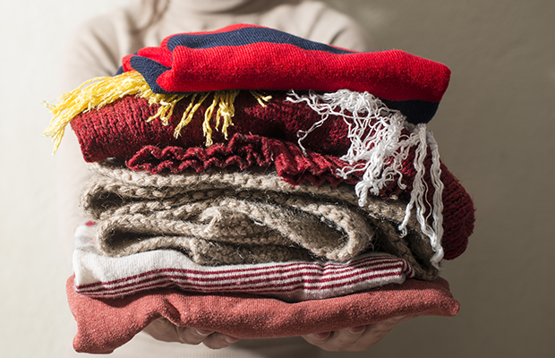

Who we are

Reducing Clothing Waste
As a society, we consume and dispose of clothing at an alarming rate. In fact, the UK sends around 350,000 tonnes of used clothing to landfills every year. This not only contributes to environmental damage but also wastes valuable resources. At Bee Kind, we believe in reducing clothing waste by encouraging people to donate their unwanted clothes to charity. Here’s why you should consider donating clothes in the UK, and how it can make a significant difference.
The Environmental Impact of Clothing Waste Fast fashion and overconsumption have contributed to a significant increase in clothing waste in recent years. The production and disposal of clothing have a significant environmental impact. For example, it takes around 2,700 liters of water to produce a single cotton t-shirt, and the production of synthetic fabrics releases harmful chemicals and greenhouse gases. Additionally, when clothes are sent to landfills, they can take hundreds of years to decompose, releasing methane gas that contributes to climate change.
The Benefits of Donating Clothes
Donating clothes to charity is a simple way to reduce clothing waste and contribute to a good cause. By donating clothes, you can help to:
Divert clothing waste from landfills
Conserve resources and reduce pollution associated with clothing production
Provide clothing for people in need
Fundraise for charitable causes